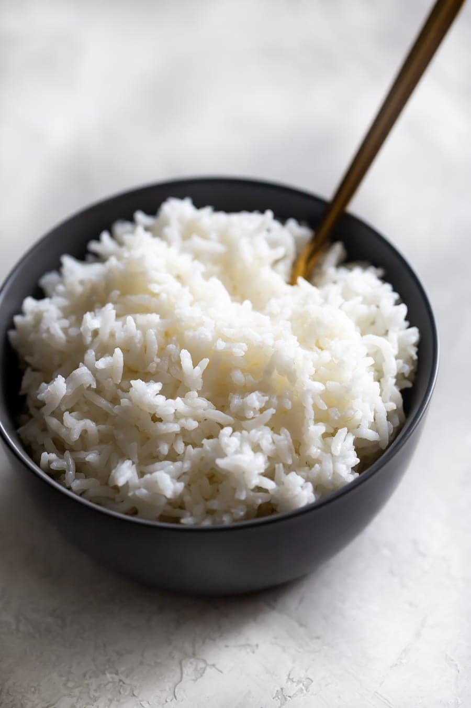

Home
White Rice Recipe

This recipe will show you how to make perfectly fluffy white rice using just a few simple ingredients.
Ingredients
- 1 cup of white rice
- 2 cups of water
- Salt
Steps
- Rinse the rice: Place the rice in a fine mesh strainer and rinse it thoroughly under cold running water until the water runs clear. This helps to remove excess starch from the rice and prevents it from sticking together.
- Soak the rice (optional): Soaking the rice for about 15-30 minutes before cooking can help to make it fluffier. To do this, add the rinsed rice to a bowl and cover it with cold water. Let it soak for about 15-30 minutes, then drain off the water.
- Add the rice and water to a pot: Add the rinsed or soaked rice to a medium-sized pot, along with 2 cups of water. If desired, you can add a pinch of salt to the water for extra flavor.
- Bring to a boil: Place the pot over high heat and bring the water to a rolling boil.
- Reduce heat and cover: Once the water is boiling, reduce the heat to low and cover the pot with a tight-fitting lid.
- Cook the rice: Allow the rice to cook for about 18-20 minutes, or until all the water has been absorbed and the rice is tender.
- Let the rice sit: Once the rice is cooked, remove the pot from the heat and let it sit, covered, for about 5 minutes. This allows the rice to steam and become even fluffier.
- Serve: Your perfectly fluffy white rice is now ready to be served with your favorite dishes.
Enjoy your super yummy white rice